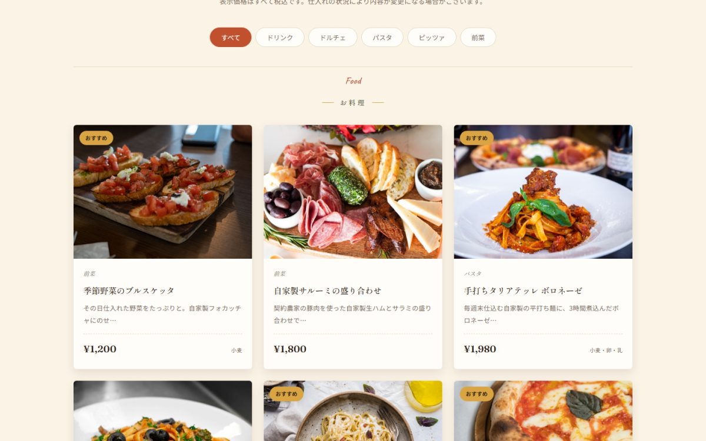

← 制作実績一覧へ
レストラン（イタリアン）／ WordPressクラシックテーマ
Trattoria Sole
メニューをカテゴリー別に管理でき、予約フォームの送信内容は管理画面から確認できます。ページビルダーも有料テーマも使わず、ゼロから書き起こしました。


| 種別 | レストラン（イタリアン）／架空の店舗を想定した自主制作 |
|---|---|
| 担当範囲 | 企画・デザイン・実装・公開 |
| 使用技術 | WordPress（クラシックテーマ）／ PHP ／ JavaScript ／ MySQL |
| 制作物 | テーマ本体 ／ サンプルデータ ／ デプロイ用パッケージ |
お店の人が更新できること
飲食店のサイトで一番困るのは、メニューや営業時間を変えたいときに制作者へ連絡しないといけない状態です。メニューは「メニュー」という専用の入力欄から追加でき、カテゴリー（前菜・パスタ・ピッツァ・ドルチェ・ドリンク）や価格、アレルゲン情報も管理画面から編集できるようにしました。
予約フォームをプラグインなしで
予約フォームは、WordPress標準の仕組みだけで実装しています。送信内容は非公開の形で保存され、管理画面の一覧から確認できます。URLを直接叩いても表示できないようにしてあります。
実際に動かして確認した
PHPを書いただけで終わらせず、ローカルにWordPressとデータベースを立てて動作を確認しました。メニュー18件・お知らせ3件を実際に登録し、予約フォームから送信してデータベースに保存されること、管理画面に表示されることまで確かめています。
つまずいた点：お知らせ一覧が表示されない
トップページ用のテンプレートが常に優先されるため、「お知らせ一覧」のページだけが表示できませんでした。WordPressのテンプレートの優先順位を調べ直し、投稿一覧専用のファイルが別途必要だと分かって追加しています。
つまずいた点：パーマリンクの設定が壊れる
コマンドでURL形式を設定したところ、Windows特有のパス変換が働いて設定値が書き換わり、すべてのページが表示できなくなりました。変換を無効にして実行し直して解決しています。